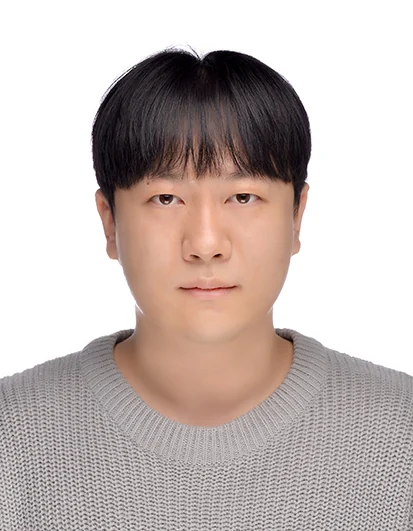
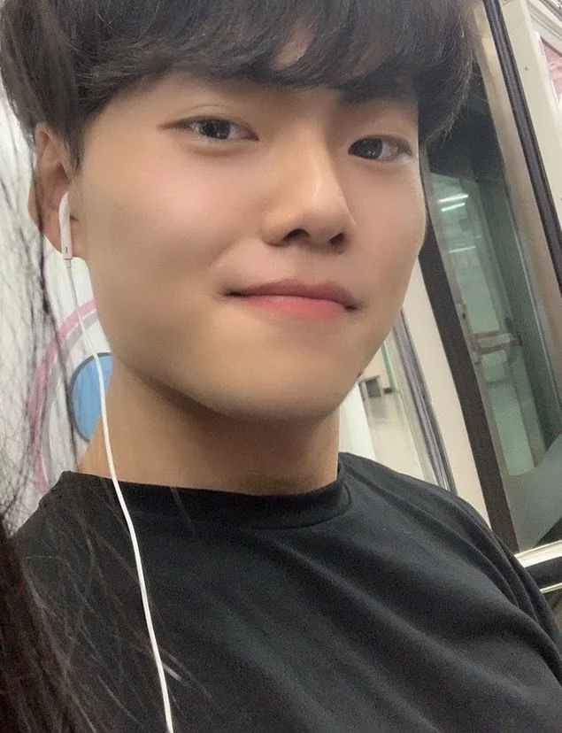
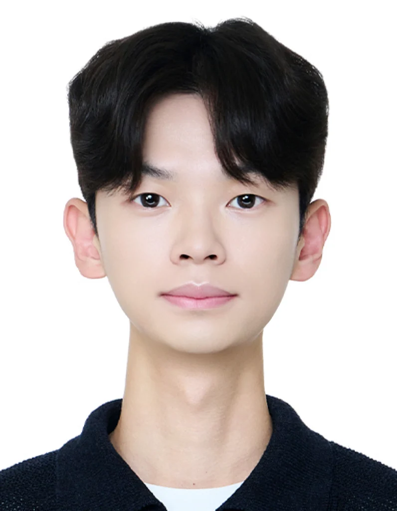

Professor
심성현 Sunghyun Sim
Research interestsDomain-Specific Foundation Models; Industrial Engineering; Industrial AI; Spatiotemporal & Multimodal AI; Explainable AI & Decision Support; Representation & Self-Supervised Learning
Meet the researchers behind WDSLab.
Research interestsDomain-Specific Foundation Models; Industrial Engineering; Industrial AI; Spatiotemporal & Multimodal AI; Explainable AI & Decision Support; Representation & Self-Supervised Learning
Research interests Industrial Data Science; Time-series Forecasting
주요 실적 보기 (8) ↗
Research interests Industrial Data Science
Research interests XAI; Time-series Forecasting; Spatiotemporal AI
주요 실적 보기 (8) ↗
Research interests Large Language Models; Spatiotemporal AI
주요 실적 보기 (4) ↗Research interests Industrial AI


Research interests Super-resolution; Anomaly Detection